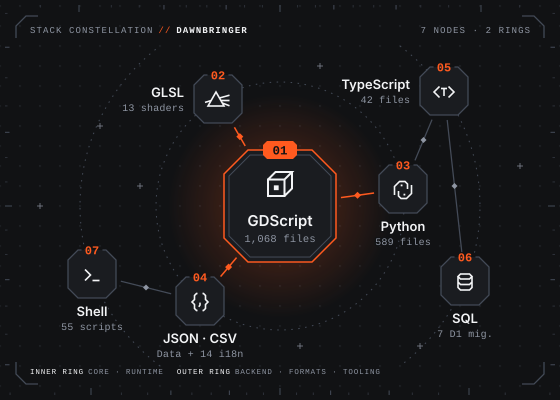
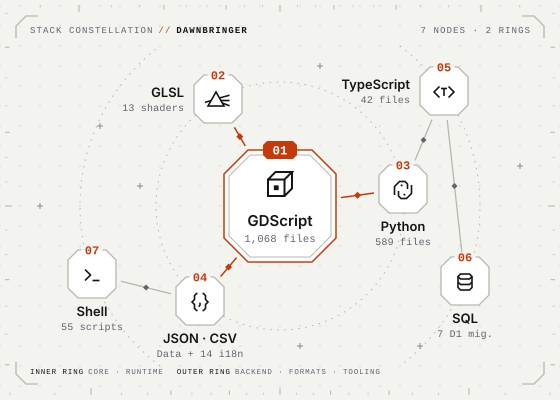
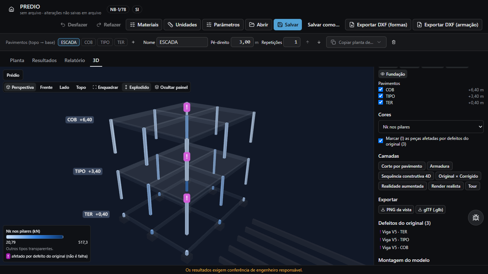

23°33'S 46°38'W // Est. 2025 // praisetc.com
Praise The Code_
Independent software and game engineering studio in São Paulo, Brazil. We build a deterministic roguelike in Godot and a structural engineering web app whose legacy NB-1/78 mode is checked against a 1991 MS-DOS binary.
- 4,671GUT test functions in 517 filesDawnbringer
- 227Vitest and Playwright E2E filesOpenStrut V2
- 25 KBzero-dependency IFC4 writerOpenStrut V2
- 14shipped locales plus a pseudo-localeDawnbringer
- 0 KBJavaScript framework code on this pagepraisetc.com
Selected work // engineering and art direction
Game // Godot 4.5 // GDScript
Dawnbringer

A dark-fantasy roguelike auto-battler built for Windows, macOS, Linux, Android and iOS, with a live desktop demo and an Android alpha. Build a hunter, read each foe's gear, then pay the Landlord or fight.
Fights run in an integer-only simulation with no random numbers, so the same inputs produce the same fight on every device. The art follows a written direction, Votive Gothic, with a locked 32-colour palette and five pillars that each come with a test.
- Engine
- Godot 4.5, GL Compatibility renderer
- Battle core
battle_sim.gd, integer clock, zero RNG- Tests
- 4,671 GUT functions in 517 files, six layers
- Content
- JSON only: 105 items, 19 Landlords, 6 biomes


01 // GDScript // 1,068 files1,051 files in game/ and 17 in tools/. 517 are GUT test files; the rest run the battle engine, run flow, HUD and HdTexture. Plus 81 .tscn scenes.
Engineering // TypeScript // GPL-3.0-or-later
OpenStrut V2

A free, offline-first web app for reinforced-concrete design of simple buildings: slabs, beams and columns, floor by floor. It runs in the browser with no server and saves each project as a local .openstrut.json file.
One pure TypeScript engine runs two codes, NBR 6118:2023 and NB-1/78. The NB-1/78 original mode reproduces SISTRUT 4.0 (MS-DOS, 1991) number for number with Float32 rounding, checked against that binary running in DOSBox-X. Results require review by a licensed structural engineer.
- Engine
src/calculo/, pure TypeScript, no React- IFC4 export
- 182-line writer, 25.0 KB chunk, no dependencies
- Tests
- 187 Vitest files and 40 Playwright E2E files
- Formats
- IFC4, DXF R12, glTF, SISTRUT 1991 import


01 // TypeScript // 412 files352 in src/. The structural engine for both codes, domain geometry, the IFC4 STEP writer, the DXF R12 exporter, the SISTRUT 1991 parser and the test suites.
Studio // verification // visual system
Engineering craft and visual system

Both products follow the same rules. Cores are deterministic. Tests compare against something the code did not produce: a published worked example, a hand calculation, a 1991 binary. Every format has a byte budget. Assets come from generators that rebuild them from source.
This site follows them too: hand-written HTML, one stylesheet, one deferred script, no framework, no webfont, no third-party request, and explicit image sizes so nothing moves while it loads.
Experiments // JEV-Factorio is an experimental agent that plays Factorio 2.0. It stays an experiment here, with no case study until it has results we can measure.


01 // HTML + CSS // zero-dependency UIEach page of praisetc.com is hand-written HTML with one shared stylesheet and one deferred script. No framework, no bundler, no webfont.
Contact // profiles
Talk to the studio
- Emailcontato@praisetc.com
- LinkedInlinkedin.com/company/praisetc
- GitHubgithub.com/praisetcdev
- YouTubeyoutube.com/@praisetc
- Blueskypraisetc.bsky.social
Company // registration
Company
- NamePRAISE THE CODE
- BrandPTC / PraiseTC
- CNPJ58.830.051/0001-20
- LocationSão Paulo, SP, Brazil
- FoundedJanuary 2025